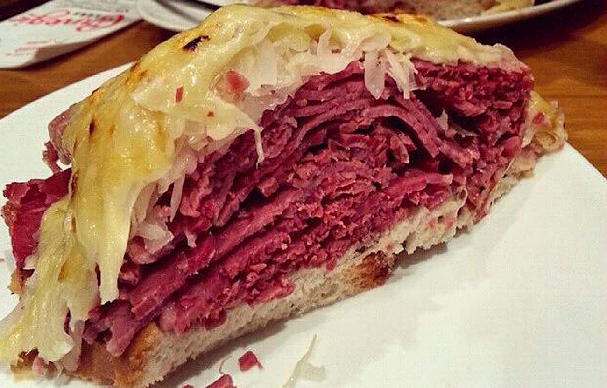

"Reuben"

Description
The now closed Carnegie Deli in NYC set the standard for the biggest, authentic, delicious, and standard setting Reuben ever seen or tasted1
Carnegie, unlike most delis, made their own corned beef and pastrami the old fashions, 14 day method of curing in their own meat processing facility. Combined with the best rye bread available, authentic sauerkraut, thousand island or Russian dressing, Swiss cheese, authentic half sour pickles, all served by a semi-rude NYC professional waiter, gave the best Reuben experience a conniseur could ask for.
- Rye bread
- Corned beef
- Pastrami
- Sauerkraut
- Swiss cheese
- Thousand Island dressing
- Mustard
- Half Sour pickles
Steps
- Slice the rye bread
- Coat both slices with mustard on one side only.
- Add huge heaps of steaming hot pastrami and corned beef. At least 1/2 lb of each.
- Add sauerkraut that falls off the sides of the pastrami and corned beef.
- Lay two large slices of Swiss cheese on top of the sauerkraut which must also be steaming hot.
- Now drizzle the Thousand Island dressing across the Swiss cheese.
- Serve with kosher dill pickles and Dr. Brown's soda for full effect.